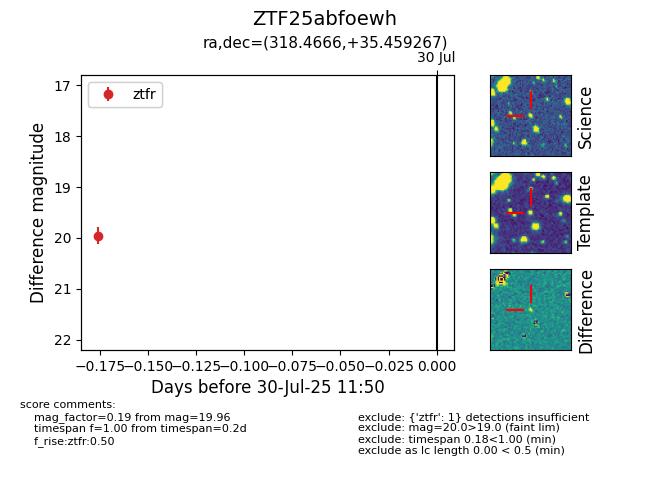

Target ZTF25abfoewh at 2025-07-30 11:50, see:
FINK: fink-portal.org/ZTF25abfoewh
Lasair: lasair-ztf.lsst.ac.uk/objects/ZTF25abfoewh
ALeRCE: alerce.online/object/ZTF25abfoewh
alt names
ZTF25abfoewh (ztf,fink)
coordinates:
equatorial (ra, dec) = (318.4666,+35.45927)
galactic (l, b) = (80.8179,-9.06405)
photometry
last ztfr=19.96
1 ztfr detections
